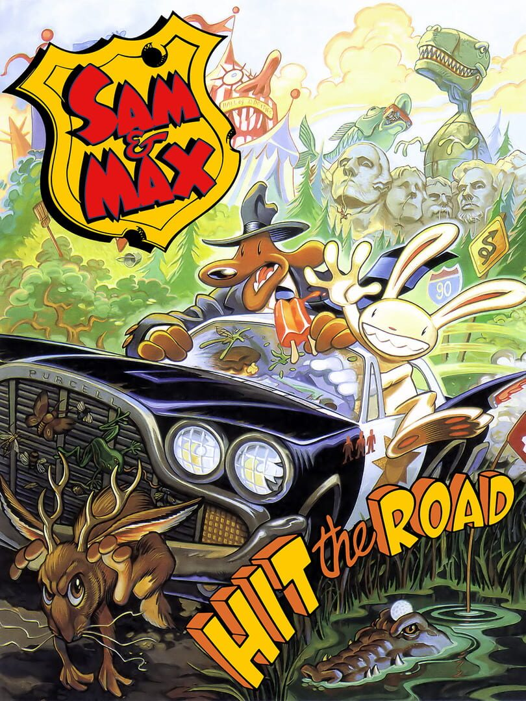

 |
|
| Tiempo de juego | 1h 22m 47s |
| Última actividad | 19/12/2025 20:39:07 |
| Añadido | 10/11/2025 18:45:52 |
| Modificado | 10/12/2025 13:52:06 |
| Estado de finalización | Jugado |
| Librería | Playnite |
| Fuente | |
| Plataforma | PC (Windows) |
| Fecha de lanzamiento | 1/11/1993 |
| Puntuación de la Comunidad | 85 |
| Puntuación de la Crítica | 83 |
| Puntuación de usuario | |
| Género | Adventure Point-and-click Puzzle |
| Desarrollador | LucasArts |
| Editor | LucasArts |
| Característica | Single Player |
| Enlaces | Steam GOG |
| Tag | |
Ponete el cinturón, agarrá un cono de helado de palito y tratá de ignorar al conejo psicópata que tenés al lado. Esto es Sam & Max Hit the Road, la aventura gráfica más bizarra, surrealista y demente de la historia.
Sos Sam, un perro detective de dos metros, con saco y sombrero. Tu compañero es Max, un conejo "hiperquinético" (léase: un enfermo mental al que le gusta la violencia gratuita). Son la Policía Freelance. ¿El caso? Un Pie Grande, estrella de un circo, se afanó una jirafa y se dio a la fuga.
Lo que sigue es el mejor "road trip" de la historia gamer. Olvidate de la lógica, acá no existe. Vas a viajar por las "trampas para turistas" más bizarras de Estados Unidos: la Bola de Hilo Más Grande del Mundo, el Vórtice Misterioso, un boliche de Topos... todo mientras resolvés puzzles que solo tienen sentido en la cabeza de un loco.
Un clásico de clásicos. Es el juego que te demostró que las aventuras gráficas no tenían por qué ser serias. Una joya absoluta que tenés que jugar.